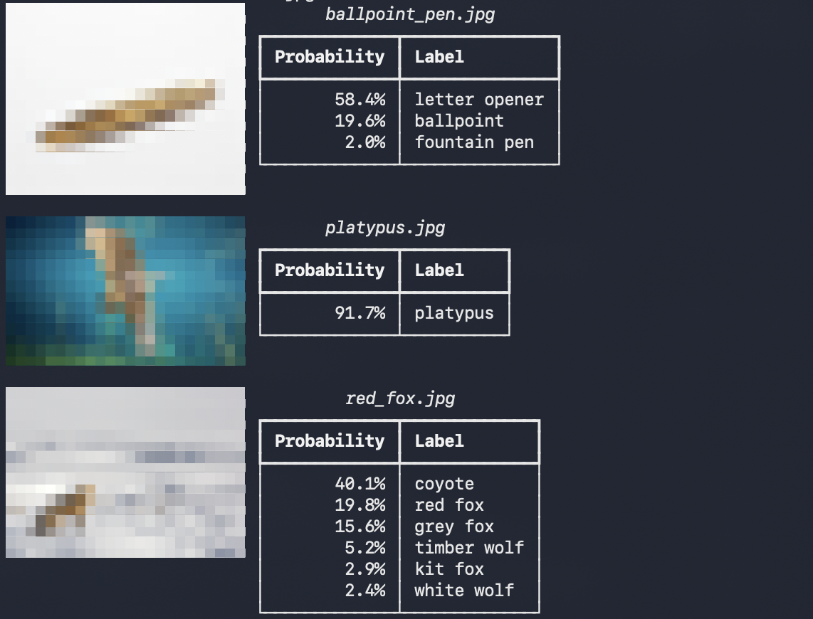
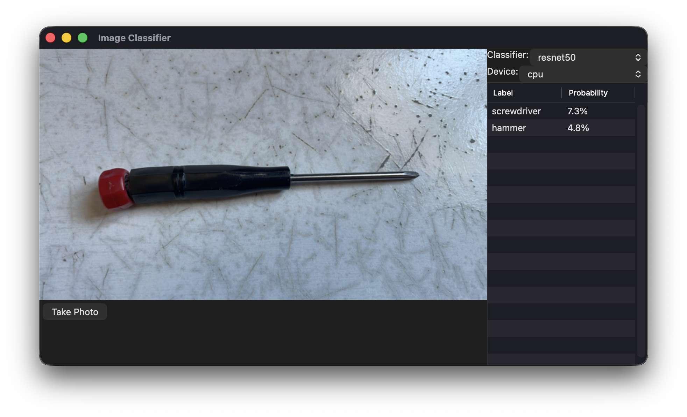

Packaging a Python Project
Last updated on 2026-08-25 | Edit this page
Overview
Questions
- How do I package a Python library for distribution?
- How do I build a stand-alone command-line tool or GUI application?
Objectives
- Write a
pyproject.tomlfile for an existing project. - Configure continuous integration and linting using the
pyproject.tomlfile. - Build binary wheels for a project.
- Build an application for your operating system.
Activity: Preparing a Project for Distribution
Example Code
The example code can be found at: https://github.com/Southampton-RSG-Training/byte-sized-rse-python-packaging-example
This is a small project which wraps the Torchvision image classifiers and provides:
- an easy to use library that lets you experiment with inference using these models,
- a command-line tool that lets you perform inference on image files,
- a GUI app that lets you perform inference on image files (and on some platforms, images from a web cam).
Setup
To get started:
- create a copy from the template by selecting “Use this template -> Create a new repository”
- clone the repository to your local machine and go into the project directory
BASH
cd
git clone git@github.com:[your-github-id]/byte-sized-rse-python-packaging-example.git
cd byte-sized-rse-python-packaging-exampleTo use the code, you can create a virtual environment an install all the dependencies:
BASH
python3 -m venv venv
source venv/bin/activate
pip install click numpy pillow rich rich-pixels toga torch "torchvision >= 0.13" tqdmYou should then be able to run the tests:
The command-line tool:

And the GUI:
If you open an image file in the GUI, you should see the labels and probability of each label.

Adding a pyproject.toml
The first step in packaging your project is to create a
pyproject.toml file.
This is the absolute minimum that you need. With just this you can
build and install your project with pip, but usually you
will want to specify the build system as well. We are going to use
setuptools in this example. We have some data files that
are needed in the distributions (mainly image files used in the UI and
tests) and we want to also use setuptools-scm to make sure
that all files under version control are included in the distribution
(there are ways to include and exclude extra files if needed, but we
don’t need to).
For simple Python packages like this one, the choice of build system doesn’t have much impact.
Adding Dependency Information
So far we don’t yet have any information about the code and its dependencies. We need to add information about the Python versions that this project can use, as well as the dependencies.
Add Dependencies
Our project requires Python 3.13 or later, and from our initial
installation, we know we need the packages click,
numpy, pillow, rich,
rich-pixels, toga, torch,
torchvision >= 0.13 and tqdm.
Add the requires-python and dependencies
information to the [project] section of the
pyproject.toml.
Check that you can install the package and its dependencies with a command like:
Optional Dependencies
The downside of simply listing all of the dependencies is that we require the user to install all the dependencies, whether or not the user is going to use them. For example, if they are using the code as a library on a system without a GUI (such as an HPC cluster) then installing the dependencies for the GUI are not very useful. Similarly if the project is being used purely as a library, perhaps on a web server or in a Jupyter notebook, then the command-line tool is not particularly useful, and so the CLI dependencies are not needed.
We can solve this problem by adding “optional dependencies” for each
of the additional capabilities. We do this by adding a new
[project.optional-dependencies] section with entries for
the CLI and GUI.
Add Optional Dependencies
Add a new [project.optional-dependencies] section with
sections for cli, which depends on click,
rich, and rich-pixels; and gui
which depends on toga. Note that there is nothing special
about the names “gui” and “cli”; you can use any name you like.
Remove those packages from the main
Test your solution by running:
to only install the core dependencies for the library.
Test installing the GUI dependencies with:
Test installing both the GUI and CLI dependencies with:
The [project] and
[project.optional-dependencies] should look something like
this.
Dependency Groups
Sometimes there are tools which developers might need to work on your
code. In our example we use tools like black,
flake8 and isort to help maintain code
quality. We could (and some projects do) add an additional optional
dependency section (frequently called “dev”) with these
dependencies.
These tools don’t need to have the project code installed to work, and so in these cases you can instead use “dependency groups”.
Adding Tool Configuration
Most code quality tools have options which can be configured. This
can be done through command-line options, but usually you want the same
options every time you run the tools in a project. In this case the
tools often have a configuration file format that they can use to store
these commonly-used configuration options. However most of them also
support getting their configuration from the tool section
of a pyproject.toml file.
Converting isort
configuration
Our project currently has an .isort.cfg file which looks
like this:
We can move this to a [tool.isort] section inside the
pyproject.toml:
and then remove the .isort.cfg:
Verify it works by running:
Unfortunately flake8 doesn’t currently support this sort
of usage of pyproject.toml yet. We can simply use
pip install -e . to install the package and the
dependencies for testing and other CI tasks.
Doing this means that if we update or change the dependencies in the future, we don’t need to update the GitHub Action - it will install the updated dependencies automatically.
Updating CI
Having a pyproject.toml simplifies installation of the
package for developers and users; but also simplifies your continuous
integration.
Challenge
The project has a GitHub Action for running tests. As currently
written it just installs every dependency by name. We can now update it
to install using the pyproject.toml.
We can change the line
pip install numpy pillow torch 'torchvision >= 0.13' tqdm
to simply pip install -e ., and the line
pip install black flake8 isort to
pip install --group dev.
The updated action looks like this:
YAML
name: Run Unit Tests
on: [push]
jobs:
tests:
strategy:
matrix:
python-version: ["3.13", "3.14"]
os: ["ubuntu-latest", "macos-latest", "windows-latest"]
runs-on: ${{ matrix.os }}
steps:
- uses: actions/checkout@v7
- name: Set up Python ${{ matrix.python-version }}
uses: actions/setup-python@v6
with:
python-version: ${{ matrix.python-version }}
- name: Install dependencies
run: |
pip install -U pip
pip install -e .
- name: Run tests
run: |
python -m unittest discover -v tests
- name: Check style
run: |
pip install --group dev
isort --check .
black --check .
flake8 image_classifiers testsScripts
Right now if we want to run the CLI tool or GUI app we need to run it
using python -m to run the module as the main script. The
pyproject.toml provides a way to let Python know that
certain code is meant to be run as a command-line script through the
[project.scripts] and [project.gui-scripts]
sections. These are effectively the same, except on Windows where
For example you can add a [project.scripts] section
which lists command-line scripts:
The key on the left is the name of the command that will be added, and the right consists of the name of the module and function that will be run. It is equivalent to:
Once you have done this (and re-run
pip install -e ".[gui,cli]") you should be able to use the
new commands in your shell. For example:
Add a GUI script
The GUI script is located in the module
image_classifiers.gui and uses the main
function in that module.
Add a [project.gui-scripts] section to your
pyproject.toml that adds an
image-classifier-gui command.
Test that your new command works by re-running
pip install -e ".[gui,cli]" and then running:
The code in the example is currently in what is sometimes called
“flat layout”: the Python packages defined in the project
(image_classifiers in this case) are in the top level
project directory. It is common, however, to instead have a
src directory which contains the packages instead which is
sometimes called “src layout”. There are advantages and disadvantages of
both approaches.
The primary advantage of the “flat layout” is that the code is
directly importable from the top-level directory without needing a
pyproject.toml or any infrastructure: that’s why this
example is build this way. In particular, if you use “src layout” but
don’t have a pyproject.toml, you couldn’t run the scripts
via commands like python -m image_classifiers.cli.
However there are disadvantages of the “flat layout” once you have a
pyproject.toml and have run pip install -e .
(or worse, pip install .) In these cases it is sometimes
unclear how an import is finding the code and in worst cases you can
have two versions of a module in memory!
For this reason it’s a good idea once you have added a
pyproject.toml and any project.scripts, to
migrate to “src layout”. This is usually pretty easy:
If you use the hatchling build system, it requires “src
layout”.
Adding Project Metadata
After you have set up the information about the code and dependencies, generally you will want to add a lot more metadata about your project. This metadata is primarily used by package repositories like PyPI to help classify your package and help search tools and users discover whether your project matches their needs.
For example you might add the following to the [project]
section (updating the authors and maintainers sections
appropriately):
TOML
authors = [
{name = "Your Name", email = "your.email@soton.ac.uk"}
]
maintainers = [
{name = "Your Name", email = "your.email@soton.ac.uk"}
]
description = "An example project that makes Torchvision classifiers available for inference."
readme = "README.rst"
license = "MIT"
license-files = ["LICEN[CS]E*"]
keywords = ["example", "image classification", "deep learning", "neural networks", "pytorch", "torchvision"]
classifiers = [
"Development Status :: 4 - Beta",
"Programming Language :: Python",
"Natural Language :: English",
"Operating System :: MacOS :: MacOS X",
"Operating System :: Windows",
"Operating System :: POSIX :: Linux",
"Topic :: Education",
"Topic :: Scientific/Engineering :: Artificial Intelligence",
"Topic :: Scientific/Engineering :: Image Processing",
"Topic :: Scientific/Engineering :: Image Recognition",
"Topic :: Software Development :: Libraries :: Python Modules",
"Topic :: System :: Archiving :: Packaging"
]The Complete pyproject.toml
After all of this, your pyproject.toml should look like
this:
TOML
[build-system]
requires = ["setuptools >= 77.0.3", "setuptools-scm"]
build-backend = "setuptools.build_meta"
[project]
name = "packaging-project-corran"
version = "0.0.1"
requires-python = ">=3.13"
dependencies = [
"numpy",
"pillow",
"torch",
"torchvision >= 0.13",
"tqdm"
]
authors = [
{name = "Your Name", email = "your.email@soton.ac.uk"}
]
maintainers = [
{name = "Your Name", email = "your.email@soton.ac.uk"}
]
description = "An example project that makes Torchvision classifiers available for inference."
readme = "README.rst"
license = "MIT"
license-files = ["LICEN[CS]E*"]
keywords = ["example", "image classification", "deep learning", "neural networks", "pytorch", "torchvision"]
classifiers = [
"Development Status :: 4 - Beta",
"Programming Language :: Python",
"Natural Language :: English",
"Operating System :: MacOS :: MacOS X",
"Operating System :: Microsoft :: Windows",
"Operating System :: POSIX :: Linux",
"Topic :: Education",
"Topic :: Scientific/Engineering :: Artificial Intelligence",
"Topic :: Scientific/Engineering :: Image Processing",
"Topic :: Scientific/Engineering :: Image Recognition",
"Topic :: Software Development :: Libraries :: Python Modules",
"Topic :: System :: Archiving :: Packaging"
]
[project.optional-dependencies]
cli = [
"click",
"rich",
"rich-pixels"
]
gui = ["toga"]
[dependency-groups]
dev = [
"black",
"flake8",
"isort",
"build"
]
[project.scripts]
image-classifier-cli = "image_classifiers.cli:predict"
[project.gui-scripts]
image-classifier-gui = "image_classifiers.gui:main"
[tool.isort]
profile = "black"
line_length = 88
order_by_type = falseBuilding Distributions
We saw in the lecture portion of the course that you can build
distributions using the build command. This should have
been installed as part of the dev dependency group.
Build the project
Build your package using build.
You should now have a dist directory which contains a
.wheel file and a .tar.gz source distribution.
These files can be shared however you want and then used with
pip for yourself or other people to install. A common
strategy, particularly for closed source packages, is when you do a
release of your code, to add them to release page on your version
control system.
You can also upload them to PyPI if your package is open source. Doing this is straightforward once you have a PyPI account set up; however setting up a PyPI account (even a Test one) is complex because PyPI requires strong authentication so we won’t do this as part of the activity.
Building Applications
While distributing your work via pip is useful, sometimes you want to
be able to give collaborators a simple installer or executable which
allows them to run your scripts. There are a number of tools available
that can do this. We’ll use the briefcase tool, because it
has the best integration with OS code signing and app stores.
Add Briefcase Configuration
To use briefcase you first install it with pip:
You could add this to the dev dependency group in your
pyproject.toml as well.
Then you add information about your application to the
pyproject.toml:
TOML
[tool.briefcase]
project_name = "Image Classifiers"
bundle = "uk.ac.soton.example"
url = "https://github.com/Southampton-RSG-Training/byte-sized-rse-python-packaging-example"
[tool.briefcase.app.image-classifiers]
formal_name = "Image Classifiers"
sources = ["image_classifiers"]
console_app = false
requires = ["toga"]
[tool.briefcase.app.image-classifiers.macOS]
requires = ['std-nslog>=1.0.0']
# Recent Pytorch is not supported on Intel macs.
universal_build = false
# Make sure the app can use the camera.
entitlement."com.apple.security.device.camera" = true
info."NSCameraUsageDescription" = "Enable the camera to classify images interactively."
[tool.briefcase.app.image-classifiers.linux]
requires = []
[tool.briefcase.app.image-classifiers.windows]
requires = []There’s a lot more configuration that can be done, for example adding custom icons, but this hopefully gives a sense of the configuration that is needed:
- a main section with project information;
- a sub-section for each application in the project;
- a sub-sub-section for each operating system that the application supports.
The key entries are the sources and
requires entries. The sources indicate
application code that needs to be installed, while the
requires entries are dependencies that are needed for a
particular app or platform.
Run, build and package the app
In the lecture section we talked about different was to run and build a briefcase application.
Try:
- running the app in “developer” mode
- creating the app scaffolding
- building the app
- running the built app
- packaging the application
You can test the app in “development” mode using the command:
To create and build the actual application or app installer, you run:
You can test-run the built application using:
Finally, you can package the application. On Mac and Windows it will default to self-signing the app: you will need to get a signing identity to sign your code if you want to be able to run the app on other machines or submit to an app store.
The package is in the dist subdirectory, and from there
you can access it and copy it to wherever you need.
Automating Packaging Setup
This activity has been assuming that you are working with an existing
project that you now want to distribute more widely without breaking
anything. This is common in research software. However sometimes you
know before you start that you want to distribute your software in a
particular way. In these cases some of the tools will create the
pyproject.toml for you.
Hatch will set up a complete project for you, with a skeleton framework of files and packages that you can then start adding code to. It also will set up a lot of the testing and CI framework for you.
If you are looking to build an application or command-line tool, then Briefcase can also set up the framework for that, leading you through the setup for the platform you want to distribute for.
With all of these tools you may need to manually edit the
pyproject.toml to do things like add or remove
dependencies.
Continuous Integration and Building
You may have noticed that the Briefcase tool only builds for the platform you are working on. If you want to build your application for Windows, Mac and Linux you will need a computer or virtual machine running each of these operating systems.
Pure python projects don’t have this problem, but if you have a
Python extension written in C, you will usually only be able to build it
for the platform you run build on.
Most CI systems let you specify platforms to run your CI scripts on, so this provides a way for you to avoid having to have multiple computers or virtual machines: you can write a CI script that builds your packages and apps and makes the resulting files available as an “artifact” that can be downloaded, tested, and distributed.
It is even possible to completely automate the release process up to and including uploads to PyPI; although you need to be careful with secrets such as PyPI access tokens to ensure that they do not get stored in your source code. Most CI systems have a way of storing secrets securely so the CI system can use them, but they can’t be seen by anyone.
- adding a
pyproject.tomlto your project not only allows you to package your code for other people, it makes testing and continuous integration easier. - extra dependencies allow you to provide options for your users about what to install for different use-cases
- dependency groups allow you to specify dependencies that do not require your python packgae itself to be installed, which is ideal for development, testing and linting dependencies.
- configuration for development tools can be included in the
pyproject.toml - adding entries for
briefcasein yourpyproject.tomlallows you to build stand-alone apps for your operating system.